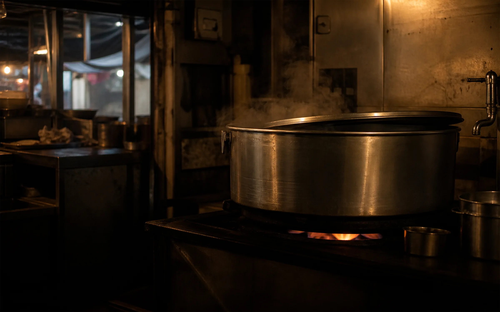
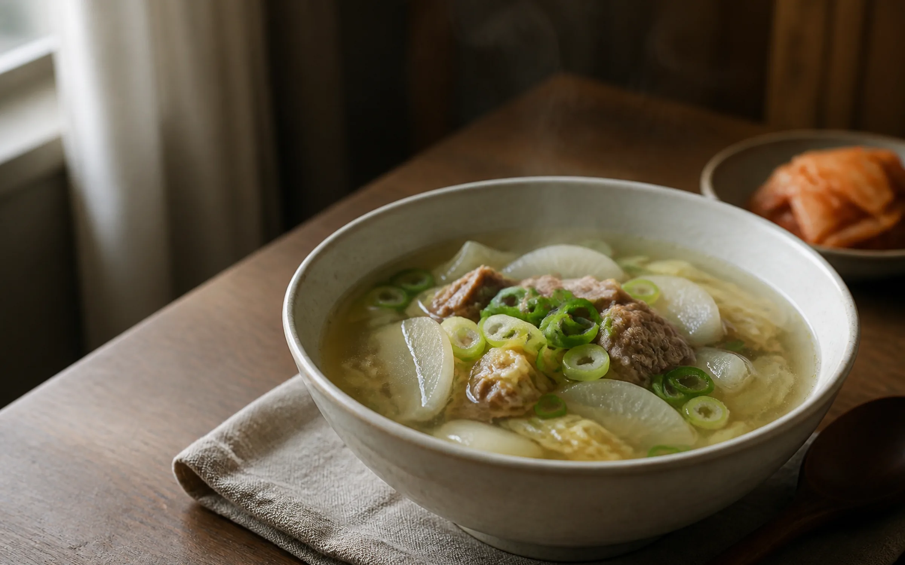
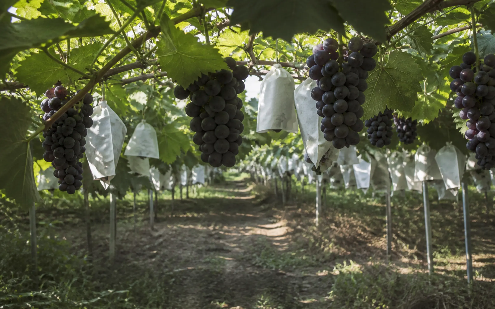

PEOPLE
여덟 시간이면 팔린다. 그런데 왜 열다섯 시간인가
안성장터국밥 대표 김형숙. 열 명 중 아홉은 모르는 일곱 시간의 차이.

Vol.08 · FOCUS
늦여름의 열기, 깊은 맛으로 건너다
장터의 기억에서 포도밭과 금광호수까지, 뜨거운 한 그릇을 따라 만나는 안성의 맛과 사람.
표지 기사 읽기EDITOR'S LETTER
8월의 마지막 일요일에 쓰는 편지. 국밥에서 시작해 안성의 하루를 한 상에 차렸습니다.
편집장의 글
PEOPLE
안성장터국밥 대표 김형숙. 열 명 중 아홉은 모르는 일곱 시간의 차이.

HOME TABLE+PAIRING
집에서 끓이는 안성의 한 그릇. 배·오이 초무침과 한 상에.

ONE DAY+CALENDAR
밥부터 먹고, 장을 보고, 호수를 걷는다. 9월 달력은 이 하루 뒤에 이어집니다.

SEASON PICK
백 년째, 지금도 바뀌는 중인 밭. 안성 포도의 진짜 이야기는 현재진행형이다.

MARKET
한 그릇이 여행의 시작이었다면, 장바구니는 그 맛을 집으로 이어가는 방법이다.

LOCAL BRAND
안성 들녘에서 시루까지. 오복시루 · 오복희 대표.